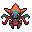

Pokédex / #386

Deoxys #386
Psychic
An alien virus that fell to earth on a meteor underwent a DNA mutation to become this Pokémon.
Generation 3 · Hoenn
Stats
| Attack | 150 | |
|---|---|---|
| Defense | 50 | |
| Sp. Atk | 150 | |
| Sp. Def | 50 |
In the wild
| Wild level | 100–100 |
|---|---|
| HP | 50 |
| Experience | 15 |
| Egg groups | Undiscovered |
Evolution
- Does not evolve.
Moves
| Level | Move | Type | Category | Power | Energy | Cooldown | Effect | |
|---|---|---|---|---|---|---|---|---|
| 1 | Tackle | Normal | Physical | 15 | 15 | 1s | Tackle is one of the most common and basic moves a Pokemon learns. It deals damage with no additional effects. | |
| 5 | Wrap | Normal | Physical | 35 | 45 | 13s | Wrap deals damage and lower the Speed of the target by two stages. | |
| 10 | Night Shade | Ghost | Special | 80 | 80 | 12s | Night Shade deals damage and has no secondary effect. | |
| 15 | Psychic | Psychic | Special | 90 | 100 | 21s | Psychic deals damage and has a 10% chance of lowering the target's Special Defense by one stage. | |
| 20 | Pursuit | Dark | Physical | 40 | 40 | 6s | Pursuit deals damage and has no secondary effect. | |
| 25 | Knock Off | Dark | Physical | 65 | 100 | 20s | The move does more damage if the target has a held item. | |
| 30 | Recover | Normal | Status | – | 90 | 120s | User recovers 50% of its max HP. | |
| 35 | Psycho Shift | Psychic | Status | – | 100 | 100s | Psycho Shift transfers any non-volatile status ailment from the user to the target, curing the user in the process. It will not transfer volatile status ailments (confusion, etc.). | |
| 40 | Zen Headbutt | Psychic | Physical | 80 | 80 | 15s | Zen Headbutt deals damage and has a 20% chance of causing the target to flinch. | |
| 45 | Cosmic Power | Psychic | Status | – | 100 | 60s | Cosmic Power boosts the Defense and Special Defense of the user by one stage each. | |
| 50 | Dark Pulse | Dark | Special | 8 | 95 | 18s | Dark Pulse deals damage and has a 20% chance of causing the target to flinch. | |
| 55 | Giga Impact | Normal | Physical | 150 | 160 | 34s | Giga Impact deals damage but the user can't attack on the next turn. | |
| 60 | Hyper Beam | Normal | Special | 150 | 160 | 34s | Hyper Beam deals damage but the user can't attack on the next turn. | |
| 65 | Psycho Boost | Psychic | Special | 140 | 140 | 24s | Psycho Boost inflicts damage and lowers the user's Special Attack stat by two stages. | |
| 70 | Rest | Psychic | Status | – | 100 | 180s | User sleeps for 5 seconds, but user is fully healed. |
Field abilities
StrengthRock SmashCutFlashBlinkTeleport
Special abilities
Pressure
Egg moves
None
Technical machines
BideBrick BreakCalm MindDouble EdgeDouble TeamDream EaterFocus PunchHyper BeamIce BeamLight ScreenMimicPsychicRageReflectRestRock SlideSafeguardShock WaveSolar BeamSubstituteSwiftTauntThunderThunder WaveThunderboltToxic
Drops
| Item | Amount | Chance | |
|---|---|---|---|
| onigiri | 1–5 | 5% | |
| Mind Plate | 1 | 0.1% | |
 | deoxys doll | 1 | 0.1% |
| TM 36 | 1 | 0.1% | |
| TM 27 | 1 | 0.1% | |
| TM 51 | 1 | 0.1% | |
| held twisted spoon | 1 | 0.1% | |
| Soothe Bell | 1 | 0.02% |